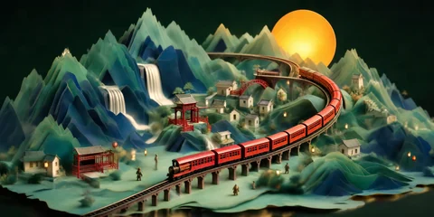
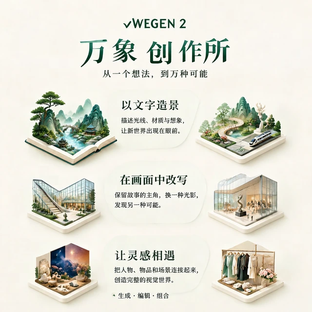
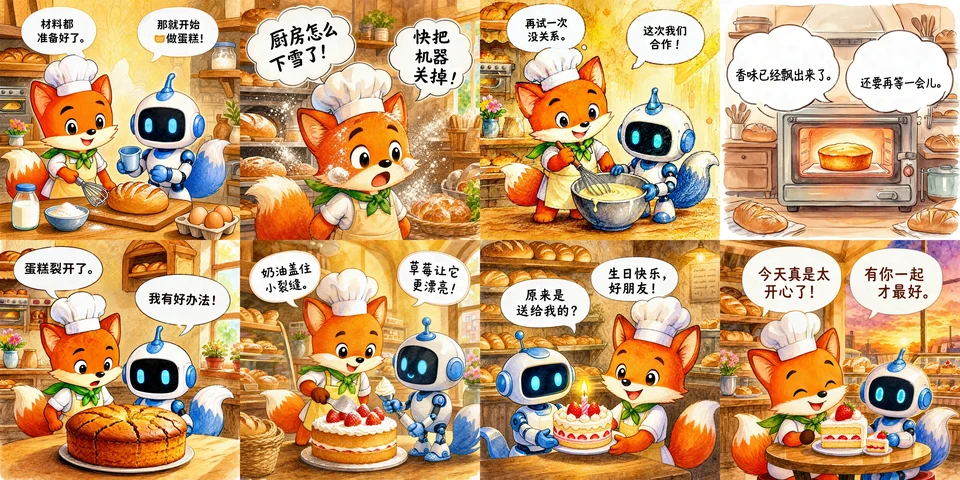

Unified multimodal creation
Native pixel-space modelingMany worlds.
One model.
From a first idea to the next edit.
A collection of imagined worlds.
A unified model for visual creation.
WeGen2 brings words, images, and conversation history into one native pixel-space model for visual creation.
- 61B
- Total parameters
- 7B
- Activated per generation token
- 11
- Generation, editing & composition benchmarks
Three ways to create
Create. Edit. Combine.
Write an image into being. Change it in conversation. Bring different references together.
Create
A letter from the night train
Text & layoutCombine
Three references, one look
Reference composition · 4 imagesEdit
A new note of amber
Multi-turn editing · 3 imagesOpen a work for the full image, its references and editing steps, and the original model prompts.
The film · 01:52
WeGen2 in motion.
From the images to the model behind them.
Model-generated images, presented through editorial motion design. Original instrumental score.
Selected generations
Light, texture & imagination.
Portraiture, poster design, paper craft, and painting. Four ways to build a visual world.


Text & image
Lettering belongs in the picture.
A landscape, its lettering and its layout, composed together in one image.
The lettering is generated with the image. Open the work to inspect the details.

Another format: an illustrated reading guide.


Original generation prompt
一张精美的正方形创意品牌海报，浅米白纯色背景，深森林绿文字，翡翠绿、暖金、珊瑚橙点缀。清晰现代的数字设计，没有纸张纹理。顶部品牌名“WEGEN2”，醒目大标题“万象创作所”，副标题“从一个想法，到万种可能”。主体为三组精密丰富的立体微缩插图，图文交错排版。第一组是打开的书本中生长出的中国山水园林，层层山峦、瀑布、亭台、小桥和沿山穿行的列车。第二组是阳光与星夜交织的玻璃美术馆，旋转楼梯、雕塑、花园和参观者。第三组是时装创作工坊，花束、衣架、布料、模特、家具组成协调优美的空间。立体模型细节精美，材质真实，光线柔和，三个世界通过优雅曲面连接。每组插图搭配一组宽敞清晰的深绿文字，正文采用端正的中号黑体。第一组标题“以文字造景”，正文“描述光线、材质与想象，让新世界出现在眼前。”第二组标题“在画面中改写”，正文“保留故事的主角，换一种光影，发现另一种可能。”第三组标题“让灵感相遇”，正文“把人物、物品和场景连接起来，创造完整的视觉世界。”底部“生成 · 编辑 · 组合”。文字逐字清晰，完整规范的字形，平整干净的底色。整个画面丰富而精致。
Original heading editing prompt
保留这张海报的原始设计。请只修改第二组标题，原来的「画面中改写」前面漏了一个「在」字，在同一行补上，完整标题是「在画面中改写」。端正清晰的中文印刷体，维持原字号和绿色。所有其他文字、品牌名、三组插画、排版和浅色背景都保持原样。
Image editing
Change the scene.
A reference image guides the next creation.
 SourceEdited
SourceEdited
Drag across the image to compare.
Reference composition
A wardrobe, brought together.
One person and eight visual references. Select a garment or accessory to trace it into the result.

Original eyewear editing prompt
只编辑第一张图的墨镜：取下原来架在头顶的方形墨镜，让她把第二张商品图里的黑色椭圆小框墨镜正确戴在眼睛上。眼镜腿自然延伸到耳朵，上方头发保持干净，没有第二副眼镜。保留原人物、发型、首饰、衣服、裤子、鞋、包、腰带和肩带，特别保留包前面的两个独立翻盖。姿势和原房间不变。完整真实的全身服装摄影。
Select a reference to explore the outfit.
Multi-turn editing
Rewrite the conversation.
Add a reply. Then revise the conversation. Each image becomes context for the next edit.


Visual storytelling
Eight panels, one story.
A fox, a little robot, and a cake. An illustrated story unfolds across eight sequentially generated panels.

Explore another sequence


Five successive image states in a robot café scene. An image-editing demonstration.
Inside the model
Working in native pixels.
Understanding and generation work together, with dedicated generation pathways and shared and routed experts.
Directly in image space.
Learned patch modules connect RGB images and the backbone. No separate pretrained vision encoder or latent autoencoder is used at inference.
A foundation for further research.
61B total · 7B activated per generation token · No reinforcement learning or distillationEvaluation
Measured across 11 benchmarks.
Top-tier results across generation, editing, and composition.
Each benchmark uses its own metric. See the report for individual scores, comparison settings, and prompt-enhancement reporting.

Resources
Start creating.
from wegen2 import WeGen2Pipeline
pipe = WeGen2Pipeline.from_pretrained(
"./weights/WeGen2", devices="auto"
)
session = pipe.session()
image = session.generate(
"An intricate paper mountain city, a red train."
)
image.save("paper-world.png")
next_image = session.generate(
"Change the scene to night. Light the windows."
)
next_image.save("paper-world-night.png")From a prompt to a conversation.
A prompt starts a generation. Images provide references. A session retains context for the next edit.
- Checkpoint
- 61B parameters · BF16
- Interface
- Python API · Command line
- Workflows
- Single-turn · Multi-turn
Memory requirements depend on image size, context length, and runtime configuration.
Read the inference guideVisitor map

Stats4U counts visitors once per day. A return on another day counts again.